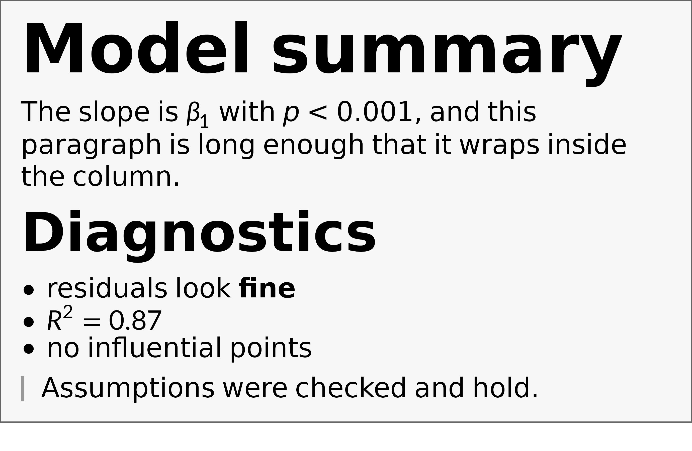
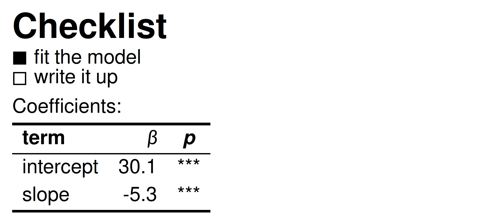
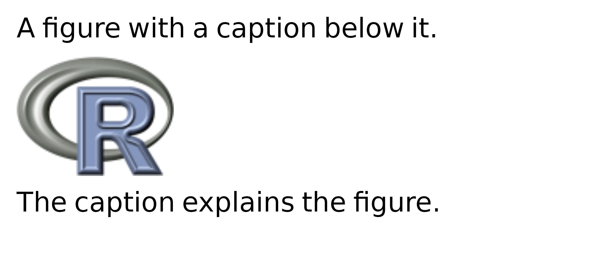
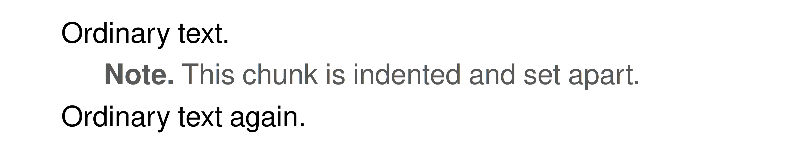
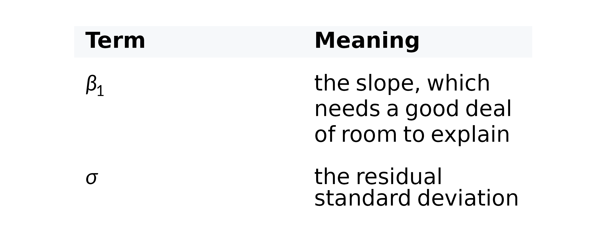
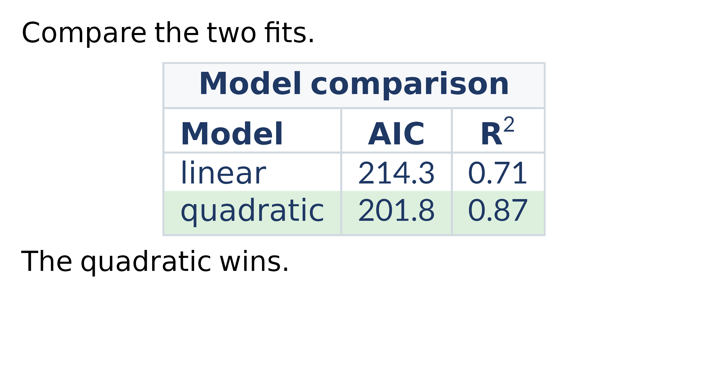

Plot labels are rarely pure math. A title might be a bold phrase with
a symbol in it; a caption might be a short paragraph that happens to
contain an equation. gridmicrotex renders CommonMark markdown and LaTeX
math together, in one grob, with no external LaTeX installation.
These functions are a wrapper around
latex_grob() — your markdown is turned into LaTeX
and drawn by the same engine. So everything latex_grob()
renders works here too, with the same fonts, the same options and the
same limits (see vignette("getting-started")), and this
vignette covers only what markdown adds on top.
There are two entry points:
-
markdown_grob()(andgrid.markdown()) for a single flowing run of text — the right choice for a title or an axis label. -
markdown_box_grob()for a whole block document — headings, lists, block quotes, code, tables — inside an optional padded, filled box.
Inline markdown
markdown_grob() handles the inline part of markdown —
**bold**, *italic*, `code`,
~~strikethrough~~ — and any $math$.
grid.newpage()
grid.markdown(
r"(The **fitted** $\hat{\beta} = (X^\top X)^{-1} X^\top y$ has ~~no~~ `se` = *0.42*.)",
x = 0.02, hjust = 0, gp = gpar(fontsize = 13)
)Colour and inline HTML
Markdown has no syntax for colour, underline, super/subscript, highlight or size. Use inline HTML; each tag does what it does in a browser:
| tag | effect |
|---|---|
<b>, <strong>
|
bold |
<i>, <em>,
<cite>, <dfn>,
<var>
|
italic |
<code>, <kbd>,
<samp>, <tt>
|
monospace |
<u>, <ins>
|
underline |
<s>, <del>,
<strike>
|
strikethrough |
<sub>, <sup>
|
sub / superscript |
<mark> |
yellow highlight |
<small>, <big>
|
smaller / larger |
<q> |
wrapped in quotation marks |
<ruby>, <rt>
|
annotation above the base (furigana) |
|
non-breaking space |
<br> |
line break |
<span style="…"> |
any property from ?md_style
|
<ruby> is worth singling out:
<ruby>漢<rt>かん</rt></ruby> sets
the annotation above its base with \overset, which is how
furigana and bopomofo are typeset. Neither marquee nor gridtext can do
this.
In a style attribute: color takes any R
colour name, the nine CSS names R happens to lack (crimson,
teal, rebeccapurple and friends),
#rgb, #rrggbb or rgb() — but note
that green, gray, grey,
maroon and purple keep their R values rather
than their (darker) CSS ones, so that they mean the same thing here as
in gpar(col = ...); text-decoration takes
underline or line-through;
font-size takes pt, px,
in, cm, mm, em,
rem, %, smaller or
larger; font-family takes the CSS generics
monospace, sans-serif and serif,
or any font name, including via a fallback list like
'Courier New', monospace. Any other property is
ignored.
One figure with most of the table in it — a sized and coloured span,
two font families, a subscript, an underline, a highlight, and the blank
line that two <br> leave behind:
grid.newpage()
grid.markdown(
r"(<span style="font-size:22pt;color:#2E5E8E">Model fit</span>,
<span style="font-family:serif">serif</span> and
<span style="font-family:monospace">mono</span>.<br><br>
The <span style="color:#B22222">**residual**</span> for H<sub>0</sub>
is <u>within</u> <mark>$2\sigma$</mark>.)",
x = 0.02, y = 0.9, hjust = 0, vjust = 1, gp = gpar(fontsize = 13)
)Tags nest, and markdown and $math$ keep working inside
them, so <u>**bold underlined**</u> and
**<u>the same thing</u>** render alike. Any
other tag is dropped and its text kept — as a browser does with
<a> or a bare <span>, which have
no rendering of their own.
Block documents
markdown_box_grob() lays out a full markdown document.
Each block — heading, paragraph, list, quote, code, table — becomes its
own grob, stacked top to bottom. The width you give is the
box width; prose wraps to fit it.
md <- r"(
# Model summary
The slope is $\beta_1$ with *p* < 0.001, and this paragraph is long
enough that it wraps inside the column.
## Diagnostics
- residuals look **fine**
- $R^2 = 0.87$
- no influential points
~~~r
fit <- lm(y ~ x, data = d) # refit
if (anyNA(d)) {
stop("missing values")
}
~~~
> Assumptions were checked and hold.
)"
grid.newpage()
grid.draw(markdown_box_grob(
md,
width = unit(4.6, "in"),
padding = unit(10, "pt"),
box_gp = gpar(fill = "grey97", col = "grey40"),
gp = gpar(fontsize = 13),
style = markdown_style(css = "pre { background: #ece2f0 }") # Code background
))
A fenced block that names a language is syntax-highlighted, and its
indentation is kept. (The example above fences with ~~~r
rather than three backticks only because it lives inside an R chunk in
this vignette, where a backtick fence would end the chunk; both
spellings are standard CommonMark.)
available_highlighters() lists what is built in — R,
Python, SQL, shell, C++, YAML, JSON, Stan, Julia and LaTeX — and the
usual GitHub aliases (py, sh,
c++, yml, jl, tex)
work too. A fence naming anything else is set as plain monospace.
Colours are ordinary CSS, using the same class names knitr writes into HTML output, so a Pandoc syntax theme can be pasted straight in:
markdown_style(css = ".co { color: #59636E } .kw { color: #CF222E }")Those are ordinary class selectors, and they are global: seventeen
two-letter names (co, st, kw,
cf, dv, fl, cn,
fu, dt, bu and friends) carry a
default colour. If you use one of them as your own class in prose —
<div class="dt"> — it picks up the syntax colour, and
a tag rule cannot override it, because a class beats a tag in CSS just
as it does in a browser. Pick another name for your own classes, or
restyle the one you want.
register_highlighter() adds a language from a KDE syntax
XML file — either one of your own (copy a bundled grammar from
system.file("highlight", package = "gridmicrotex") as a
template) or one downloaded from https://kate-editor.org/syntax/, most of which work as
they are.
Set box_gp = NULL to draw no box, or give the
r argument a value such as unit(6, "pt") for
rounded corners. padding and margin accept a
single unit or a length-4 unit giving top, right, bottom, left.
Lists, tasks, and tables
Ordered and unordered lists, GFM task lists, and tables all render.
Markdown tables become real typeset tables, with column alignment taken
from the |:---:| markers — something a text renderer cannot
do.
md <- r"(
### Checklist
- [x] fit the model
- [ ] write it up
Coefficients:
| term | $\beta$ | *p* |
|:-----|------------:|:---:|
| intercept | 30.1 | *** |
| slope | -5.3 | *** |
)"
grid.newpage()
grid.draw(markdown_box_grob(
md,
width = unit(4.4, "in"),
padding = unit(8, "pt"),
gp = gpar(fontsize = 13)
))
Images
An image on its own line is drawn as a raster, scaled to the column
width. png and jpeg are optional — if neither
is installed, or the file is missing, the image degrades to its alt
text.
# Any .png / .jpeg path works; this one ships with the png package.
img <- system.file("img", "Rlogo.png", package = "png")
md <- sprintf("
A figure with a caption below it.

The caption explains the figure.
", img)
grid.newpage()
grid.draw(markdown_box_grob(
md, width = unit(4, "in"), padding = unit(8, "pt"),
gp = gpar(fontsize = 13)
))
Styling
Everything above uses the built-in look. To change it, hand
markdown_box_grob() a style. It is a small CSS
cascade over the markdown tags, and it takes CSS directly — as text, or
as the path to a .css file:
doc <- r"(
# Results
The slope is $\beta_1$ with *p* < 0.001.
> Worth a second look.
)"
grid.newpage()
grid.draw(markdown_box_grob(
doc,
width = unit(4.5, "in"), padding = unit(10, "pt"),
style = "
h1 { color: steelblue; font-size: 1.8rem }
blockquote { color: grey40; border-left: 3px solid steelblue }
",
gp = gpar(fontsize = 13)
))The same thing written in R, which validates property names and autocompletes:
markdown_style(
h1 = md_style(color = "steelblue", font_size = 1.8),
blockquote = md_style(color = "grey40",
border_left = "3px solid steelblue")
)Lengths take three forms: a bare number is rem, a
multiple of the body font size; a string is whatever CSS says
("1.8rem", "12pt", "150%"); and a
grid::unit() is absolute.
Tags are named as in HTML — body, p,
h1–h6, ul, ol,
li, blockquote, pre,
code, strong, em, a,
table, tr, td, th,
hr, img, math,
footnote, div, span. The
properties are colour, the font family, size, weight and slant,
decorations, line height, margins, left padding, alignment and the two
borders. ?md_style has the full table, including which of
them work on an inline <span> as well as on a block.
Anything outside it parses and is then ignored, the way a browser
ignores what it does not implement — so an existing stylesheet can be
pasted in and the parts that apply still work.
Starting from a preset
markdown_style("github") is a GitHub-like look, shipped
as a CSS file you can read and copy:
markdown_style("github", h1 = md_style(color = "firebrick"))
file.show(system.file("css", "github.css", package = "gridmicrotex"))Pass an existing style as the first argument to extend it, and use
latex_options(markdown_style = ...) to set one for a whole
document.
Styling one chunk
A style set says how every heading looks. To style one
particular chunk, wrap it in a <div> with a
class or a style. Leave blank lines
around the tags — that is what makes CommonMark parse the
markdown between them rather than treating the whole block as raw
HTML:
doc <- '
Ordinary text.
<div class="note">
**Note.** This chunk is indented and set apart.
</div>
Ordinary text again.
'
grid.newpage()
grid.draw(markdown_box_grob(
doc,
width = unit(4.5, "in"), padding = unit(10, "pt"),
style = ".note { color: grey35; padding-left: 1.5rem }",
gp = gpar(fontsize = 13)
))
Inheritable properties — colour and the font-* family —
fall through to everything inside the div, exactly as in CSS; margins,
padding and borders do not. <span class="..."> works
the same way for an inline run.
Styling tables
Tables take row and cell fills, rule colour and weight, and column
spacing. The tags nest as in HTML: tr, td and
th inherit through table.
| CSS | effect |
|---|---|
table { border-color } |
colour of every rule |
tr { background } |
fills a whole row |
td, th { background }
|
fills one cell |
tr { border-bottom } |
a rule under each row |
td { border-left } |
vertical rules between columns |
td { padding-left } |
the gap between columns |
table { table-layout: fixed } |
see below |
Header cells are bold by default, which needs saying
because it could not be done before: \text{} resets the
font style, so wrapping a finished table in \textbf{} has
no effect. The emphasis is applied as each cell is generated
instead.
By default a table sizes to its content, so a wide one overflows the
box. table-layout: fixed divides the available width
between the columns and lets the cells wrap:
tbl <- r"(
| Term | Meaning |
|:-----|:--------|
| $\beta_1$ | the slope, which needs a good deal of room to explain |
| $\sigma$ | the residual standard deviation |
)"
grid.newpage()
grid.draw(markdown_box_grob(
tbl,
width = unit(4, "in"), padding = unit(8, "pt"),
style = "
table { table-layout: fixed; border-color: #D1D9E0 }
th { background: #F6F8FA }
tr { border-bottom: 1px solid #D1D9E0 }
",
gp = gpar(fontsize = 13)
))
Dropping down to LaTeX
Anything markdown cannot express, write as LaTeX inside a math span.
The clearest case is a table: markdown tables have no spanning cells
and no per-cell colour, and a LaTeX array has both.
tbl <- r"($$\begin{array}{|l|c|c|}\hline
\rowcolor{#F6F8FA}\multicolumn{3}{|c|}{\textbf{Model comparison}}\\\hline
\textbf{Model}&\textbf{AIC}&\textbf{R}^2\\\hline
\text{linear}&214.3&0.71\\
\cellcolor{#DDF0DD}\text{quadratic}&\cellcolor{#DDF0DD}201.8&\cellcolor{#DDF0DD}0.87\\\hline
\end{array}$$)"
grid.newpage()
grid.draw(markdown_box_grob(
paste0("Compare the two fits.\n\n", tbl, "\n\nThe quadratic wins."),
width = unit(4.6, "in"), padding = unit(10, "pt"),
style = "math { color: #1F3864; font-size: 1.1rem }",
gp = gpar(fontsize = 13)
))
That is one \multicolumn spanning header, a
\rowcolor band and three \cellcolor cells —
none of which GFM table syntax can express. The same route reaches
cases, aligned, \multirow,
\newcolumntype and everything else in
vignette("getting-started").
Note the header cell written \textbf{R}^2 rather than
\textbf{R^2}. Inside $$…$$ you are already in
math mode, so ^ superscripts — but \textbf{}
switches to text mode, where ^ is an accent rather
than a superscript operator and R^2 comes out flat. Put the
superscript outside the text command. There is no need to open
$…$ again either: delimiters do not nest, and an escaped
\$ would simply typeset a dollar sign.
Styling reaches the block, not inside it, and that
figure shows both halves at once. The math rule sets the
colour and size of the table’s text but leaves the prose either side
black, because those properties travel on the block’s gp.
The cell fills ignore it completely.
So the cascade cannot see through a math span. That
array is math, not a markdown table, and
table, tr and td rules leave it
untouched — which is why its colours had to be written in LaTeX rather
than CSS. That is the trade: a GFM table is styled by the cascade but
cannot span cells; a LaTeX array spans anything but is
styled in LaTeX.
What is and isn’t supported
Full CommonMark plus the GitHub extensions — tables, strikethrough, autolinks and task lists — is parsed, so parsing is never the limitation.
Nothing errors: anything that cannot be drawn degrades to its text. This document contains every degradation at once, which is easier to look at than to read about:
doc <- r"(A [link](https://example.org) keeps its text, an
 becomes its alt text, and an
<unknown>unknown tag</unknown> keeps its content.
Footnotes[^1] land at the foot.
<table><tr><td>an HTML table is dropped</td></tr></table>
[^1]: Like this one.)"
grid.newpage()
grid.draw(markdown_box_grob(
doc,
width = unit(4.4, "in"), padding = unit(8, "pt"),
gp = gpar(fontsize = 13)
))The link is styled but inert, the missing image shows its alt text, the unknown tag is stripped and its words kept, the footnote is numbered and moved to the foot, and the HTML table is gone entirely — no error, no placeholder. In detail:
- Inline images keep their alt text only. A block-level image, alone on its line, is drawn.
-
Links keep their text; the destination is dropped.
They are styled blue and underlined through the
atag, which a stylesheet can change. -
Footnotes (
[^1]with a[^1]:definition) put a superscript marker in place and the note at the foot, after a rule. Only inmarkdown_box_grob();markdown_grob()shows the marker and drops the note. -
Display math — a paragraph that is nothing but
$$…$$— gets its own centred line, styleable as themathtag. Inline$…$is unaffected. -
Small caps and
font-variant-numericare not rendered. -
Block-level HTML other than
<div>is dropped,<table>included — use GFM’s table syntax. - Spanning cells are not reachable from markdown table syntax. Write the table as LaTeX instead; see Dropping down to LaTeX.
- Syntax highlighting refuses a downloaded grammar that uses KDE’s dynamic rules rather than colouring it approximately; thirteen of twenty sampled definitions loaded.
-
Code comes out slightly tight on
png(type = "cairo")andsvglite, which report sans widths for the"mono"family. Useragg::agg_png()if that matters.
Everything else — emphasis, headings, lists, quotes, tables, rules,
block images, footnotes, ruby annotation, and of course
$math$ — renders.